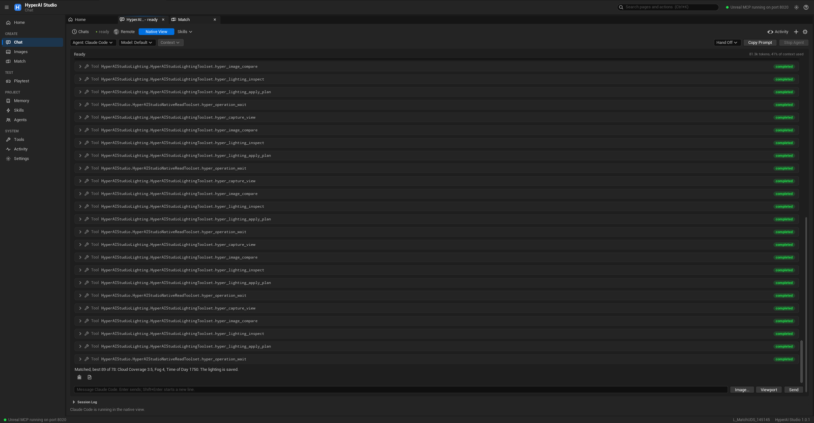
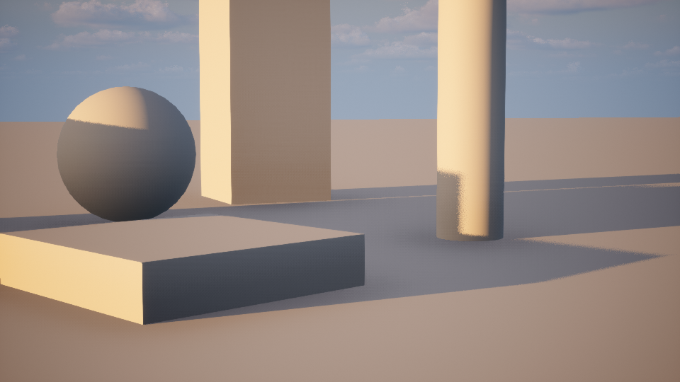
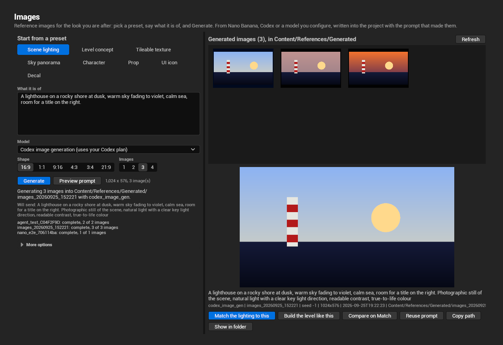

The Match page.
The Match page compares what the editor makes with a reference image, side by side or with a wipe. Pick a reference with Browse… or Recent, and a source:
- Image match: a match session's attempts, one thumbnail per iteration along the bottom, each with its score. Click one to compare it; the reference stays on the left.
- Lighting: the level viewport measured against the reference, with the differences in exposure, contrast, colour temperature and saturation, and suggested changes.
Under the pictures: the score and its parts (Palette, Tone, Layout, Detail) and Next, what to change next. Drag to pan, wheel to zoom, double-click or Fit to fit both images.

Match it: the agent does the work.
Match it hands the reference to your preferred agent as a job. Choose what the job is:
Match the lighting
The agent relights the level until it matches: exposure first, then the sun or sky, fog, sky light and post process, one change at a time, each attempt captured and scored. Target: 78.
Build the level to match
The agent works as a level designer: a camera framed like the reference, a blockout by shapes, then materials, then lighting. Target: 72, since a blockout matches less closely than light.
The job opens a chat for it on its route's agent (Lighting or Level Design) or your preferred one, sends the task with the reference attached, and follows it. A banner on the Match page says who has it, the round and the best score, with Show chat and Stop. Its edits for its own packs are approved as they come, so it can work while you do something else; everything stays undoable.
From anywhere else: Images › Match the lighting to this or Build the level like this on a generated picture, or the console, HyperAIStudio.Match lighting|level <reference image>. In Claude Code, the workflow /hyperai-match <reference> <what to match> runs the same loop with a planner and a judge.

How a job decides.
After every turn of the agent, HyperAI reads the match session itself and decides:
| It sees | It does |
|---|---|
| The best attempt reached the target | Stops: "Matched: 89 of 78 at attempt 44, after 45 attempts." |
| Progress, but not there | Sends the agent back with the best score, the regions that differ most and the compare's top suggestions. |
| A round that gained under a point | Asks the agent to switch to another kind of lever. A second flat round stops the job at its best. |
| A round with no attempt | Reminds the agent how to capture and compare; a second empty round stops the job. |
| Six follow-up rounds used | Stops at its best and says what still differs. |


The pictures above are from HyperAI's own proof run on Ultra Dynamic Sky: the level started at the sky's defaults and reached 89 of 78 in two rounds, 45 attempts, with HyperAI sending the agent back once.
Building a level to match.
- Frame it.A camera,
HyperAI_MatchCamera, placed and aimed so its view frames the level the way the reference frames its scene. - Block it out.Shapes at the right scale for a 180 cm character: ground, walls, landmarks, paths. The project's own meshes first.
- Dress it.Materials that give the reference's palette.
- Light it.Last, as in Match the lighting. Once the framing matches, the compare switches to aligned mode so structure counts too.
Ultra Dynamic Sky, and friends.
Ultra Dynamic Sky is Blueprint only: it owns its sun, sky light, fog and atmosphere and redraws them from its own variables. HyperAI's lighting pack reads and writes those variables the way the Details panel does, so its construction script runs and every change is undoable. It knows Ultra Dynamic Sky and Ultra Dynamic Weather, Sun Sky and the Sky Sphere.
| Ultra Dynamic Sky variable | What it moves |
|---|---|
Time of Day (0–2400) | Where the sun and moon are, and with them most of the look. |
Cloud Coverage · Fog · Dust Amount | How much sun gets through, haze and depth. |
Sun Light Intensity · Sun Light Color · Moon Light Intensity · Sky Light Intensity · Night Brightness | The lights it owns. |
Overall Intensity · Saturation · Contrast | The whole picture. |
Sun Yaw · Sun Pitch | Where the sun's path sits in the sky. |
Apply Exposure Settings · Exposure Bias Day / Dawn / Dusk / Night / Cloudy | The sky's own exposure. Locking exposure turns it off. |
Ultra Dynamic Weather: Rain · Snow · Wind Intensity · Thunder/Lightning · Material Wetness | Weather, when the level has it. |
The op is set_sky_system, with the variable named as the Details panel shows it. While such a sky owns the lights, edits to the stock sun, sky light, fog and atmosphere are refused with the variable to use instead, so no second sun appears.
Ultra Dynamic Sky's lights are not in physical units, so it sits far below real sunlight's EV100 15, often between -4 and 2. Lock the exposure, capture, and move the EV100 until the frame's luminanceP50 is near 0.18. A black or white capture means the exposure is wrong, not the light.
Captures and scores.
hyper_capture_viewdraws a camera, a transform or the viewport to PNGs underSaved/HyperAIStudio/Captures, with metrics (luminance percentiles, colour, contrast) and frame-to-frame differences. Nothing in the level moves.- It waits for the level to show your last change. Sky captures, global illumination and fog take many frames to catch up. After an edit it keeps drawing for at least 1.5 seconds and 45 frames, then until two draws match, 6 seconds at most; the report says how long it took (
settleFrames) and whether it ran out of time. hyper_image_comparescores an attempt against the reference, 0 to 100: look mode for concept art and photos (palette, tone, layout, detail), aligned mode when both frame the same view. It outlines the worst regions and suggests what to change.- A session keeps up to 60 attempts together under
Saved/HyperAIStudio/Match/<id>, with each candidate and side-by-side, and calls a plateau after three iterations without a gain.
The Images page.
Make the reference first. Most images need three things: a preset, a line saying what it is of, and Generate.

- Pick a preset.Scene lighting, Level concept, Tileable texture, Sky panorama, Character, Prop, UI icon or Decal. Each adds the words its kind of image needs, what to keep out, a shape and a count; the prompt box says what to describe. Press it again to send the prompt as written.
- Say what it is of.As you would tell an artist: "a mountain monastery at dusk, low sun, thin fog."
- Model, shape, images.The model on its own row; the shape (16:9, 1:1, 9:16, 4:3, 3:4, 21:9, longest side 1024 so every model bills at 1K); 1 to 4 images.
- Preview, then Generate.Preview prompt is free: the exact prompt and the price. Generate spends; pressing it is the approval.
More options holds the rest: more things to keep out, a prompt template and its slots, width, height and seed, the batch name, and Save preset, which saves your settings as a preset for the team in .hyperai/image-presets.json. Pictures land in Content/References/Generated/<batch>, each with the prompt that made it. On a picture: Match the lighting to this, Build the level like this, Compare on Match, Reuse prompt, Copy path and Show in folder.
Image models and prices.
| Model | Id for agents | Per image | Needs |
|---|---|---|---|
| Nano Banana 2 | nano_banana_2 | $0.067 (1K) to $0.151 (4K) | GEMINI_API_KEY, billed by Google to that key |
| Nano Banana Pro | nano_banana_pro | $0.134 (1K) to $0.240 (4K) | |
| Nano Banana 2 Lite | nano_banana_2_lite | $0.0336 | |
| Nano Banana | nano_banana | $0.039 | |
| Codex | codex_image_gen | Your ChatGPT plan | The Codex CLI, signed in |
| Gemini CLI | gemini_image_gen | Your key's billing | Gemini CLI's nanobanana extension |
| Your own | Any id | As you set it | A service and model under Settings › Image services |
Prices are Google's, as the plugin shipped; each call counts against the session spend cap. Agents that cannot draw, such as Claude Code, ask hyper_image_generate to have Codex or Nano Banana draw into the project, then open the picture.